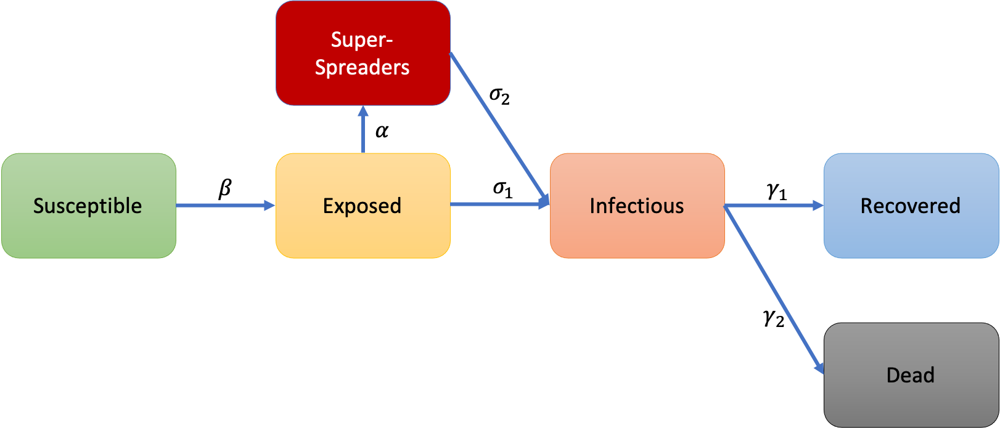

Look Here
What if the thing you see, the sound you hear is not so truthful.
In late February, drug company Biogen held its annual conference in Boston.
The United States had fewer than 20 known COVID-19 cases at the time.
But one of the roughly 200 attendees must have carried the virus.
It triggered a big outbreak.
At least 97 people who attended the conference, or lived in a household with someone who did, tested positive.
The Biogen meeting had become a superspreading event.
Eventually, the virus spread from the meeting across Massachusetts and to other states.
A recent study estimates it led to tens of thousands of cases in the Boston area alone.
COVID-19 superspreading events have been reported around the world.
They happen in all sorts of places: bars and barbecues, gyms and factories, schools, churches, and cruise ships.
But why do these clusters occur—and why are they so important?
Our model is developed based on the classical SEIR compartment model. It’s the one of the most classic one and many models are derivatives of this basic form.
Based on the classic model, we developed our modified one with the super-spreading compartment and the dead compartment. The super-spreading compartment here is especially designed for capturing the super-spreading in the disease transmission and the dead compartment is used to get closer to the epidemiological lethal characteristics of COVID-19. Each parameter here still represents the probability of flowing from the previous compartment to the next compartment.
Based on the classic model, we developed our modified one with the super-spreading compartment and the dead compartment. The super-spreading compartment here is especially designed for capturing the super-spreading in the disease transmission and the dead compartment is used to get closer to the epidemiological lethal characteristics of COVID-19. Each parameter here still represents the probability of flowing from the previous compartment to the next compartment.
Here we use 10 k people as the whole population and performs a simulation based on the basic SEIR model. Because this model is a one-way flow, eventually everyone will be infected and recovered. So the purple line representing the recovered compartment gradually comes to the whole population number. And on the 77th day of the simulation, it reached the peak.
From the figure below, we can see that the peak of the simulated epidemic was about 50 days earlier than the previous one, it reached the peak at day 27. This is very similar to the pattern of previous COVID outbreaks. The disease did not spread for a long time before it broke out but reached its peak in a short time. The response time left for the government and medical institutions is very limited.
If a small minority of cases leads to most of the spread, then stopping these people from transmitting should bring the pandemic under control. So we next predict the impact of the “stay at home order”. We used the modified SEIR model to predict what it would be like if the stay at home order was issued on the day 20th, day 18th, and day 15th days. When the stay-at-home order started, we gradually reduced the contact rate r between people and limited it to less than 5.
When the order is issued on day 20th, we can see that there is no significant difference from the previous one. The peak came on day 27th, but the number infected people of peaks dropped by about 300. Now is 2700. If the order is issued on day 18th, We found that the peak was delayed by three days. The peak came on day 30th, and the number infected people of peaks dropped down to 2200. Noted that we simulated on a really small population with only 10k people, it would be a much more significant difference if the population is more than millions. And if the order could be issued much more earlier, let’s say on day 15th, The peak was postponed for 13 days and the number of infected people of the peak is lower to 1.7k.
In other words, if the policy can be implemented earlier and people can abide strictly we will have more time for the disease. The peak will come later. There will be fewer people. The resources of the hospital will be more adequate. Then the corresponding death rate will be greatly reduced.
Here we used a complex network and an improved SEIR model to simulate the process of virus spread in the population. Assuming that each node on the network is an individual, and the edge represents the contact between two individuals. Based on the SEIR model, nodes (individuals) have four states as described in the basic SEIR model.
On the left side is the control group. We did not limit any activity on all nodes. The infected counts basically follows the exponential growth as most infectious disease do. For the middle one, we change the contact rate of all nodes whose degree is greater than 15. These nodes are "hubs" in the network. Most nodes are connected to them and if they are under controlled, the infected counts will be limited to a relatively low level. On the right side, we further simulated the result that only limits the "super-hubs" in the network. Here we defined the "super-hubs" as the nodes whose degree is greater than 30. From the figure we can tell that although the "hubs" were isolated, the spread of the epidemic was only delayed to a certain extent because of the widely connection among nodes. It couldn't be completely restrained. The node (individual) does not have to be in contact with the hubs, but can also indirectly contact through other nodes and then get infected. Therefore, the effect of only controlling "hubs" to suppress the epidemic is not ideal.
It is worth noting that super-spreaders are not equivalent to super-spreading incidents, and super-spreading incidents are not only caused by super-spreaders. Host behavior and living environment will have a certain impact on the super-spreading event. Although limited to the current technical methods, we cannot judge who is a super spreader in advance, but we can completely control the other two factors in the super spread event, the behavior and environment.
Because the spread of the virus will also be affected by factors such as the ability of the virus to infect, the actual transmission dynamics model is much more complicated. Our work only explains some phenomena in the anti-epidemic process from the perspective of the network structure, and the conclusions can only be used for experiments or quantitative decision-making reference.
SARS-CoV-2 is difficult to contain because many transmissions occur during the pre-symptomatic phase of infection. Moreover, in contrast to influenza, while most SARS-CoV-2 infected people do not transmit the virus to anybody, a small percentage secondarily infect large numbers of people.
The effectiveness of school-closure policies to mitigate seasonal and pandemic influenza is controversial, mostly because of the lack of empirical evidence about the behavior of the population during the implementation of these policies. In this study, we measure the behavior of the population during regular school/work days and when schools/classes are closed as a consequence of a school-closure policy. We leverage the obtained data to develop an innovative data-driven predictive-modeling framework to reduce the uncertainty surrounding school-closure policies.